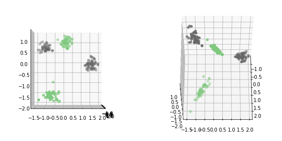

Feature Engineering¶
interesting random states
18 0.486666666667 0.986666666667 42 0.553333333333 0.986666666667 44 0.526666666667 1.0 54 0.56 1.0 67 0.506666666667 1.0 70 0.586666666667 1.0 79 0.673333333333 1.0 96 0.526666666667 1.0 161 0.486666666667 1.0 174 0.566666666667 1.0 175 0.62 1.0
from sklearn.datasets import make_blobs
from sklearn.preprocessing import scale
X, y = make_blobs(n_samples=200, centers=4, random_state=42)
X = scale(X)
y = y % 2
plt.scatter(X[:, 0], X[:, 1], c=y, cmap='Accent')
<matplotlib.collections.PathCollection at 0x7f4bdff125c0>
from sklearn.linear_model import LogisticRegressionCV
X_train, X_test, y_train, y_test = train_test_split(X, y, random_state=0)
logreg = LogisticRegressionCV().fit(X_train, y_train)
logreg.score(X_test, y_test)
0.5
plt.scatter(X[:, 0], X[:, 1], c=y, cmap='Accent')
line = np.linspace(-3, 3, 100)
coef = logreg.coef_.ravel()
plt.plot(line, -(coef[0] * line + logreg.intercept_) / coef[1])
plt.xlim(-1.8, 2)
plt.ylim(-2, 1.8)
(-2, 1.8)

# Same as PolynomialFeatures(order=2, interactions_only=True)
X_interaction = np.hstack([X, X[:, 0:1] * X[:, 1:]])
from mpl_toolkits.mplot3d import Axes3D
fig = plt.figure(figsize=(10, 5))
ax = fig.add_subplot(121, projection='3d')
ax.scatter(X_interaction[:, 2], X_interaction[:, 0], X_interaction[:, 1], c=y, cmap="Accent")
ax.view_init(elev=0., azim=0)
ax = fig.add_subplot(122, projection='3d')
ax.scatter(X_interaction[:, 2], X_interaction[:, 0], X_interaction[:, 1], c=y, cmap="Accent")
ax.view_init(elev=60., azim=0)

X_i_train, X_i_test, y_train, y_test = train_test_split(X_interaction, y, random_state=0)
logreg3 = LogisticRegressionCV().fit(X_i_train, y_train)
logreg3.score(X_i_test, y_test)
0.96
plt.scatter(X[:, 0], X[:, 1], c=y, cmap='Accent')
line = np.linspace(-3, 3, 100)
coef = logreg.coef_.ravel()
coef3 = logreg3.coef_.ravel()
plt.plot(line, -(coef[0] * line + logreg.intercept_) / coef[1])
curve = -(coef3[0] * line + logreg3.intercept_) / (coef3[1] + line * coef3[2])
mask = coef3[1] + line * coef3[2] > 0
plt.plot(line[mask], curve[mask], c='k')
plt.plot(line[~mask], curve[~mask], c='k')
plt.xlim(-1.8, 2)
plt.ylim(-2, 1.8)
(-2, 1.8)
Discrete interactions¶
df = pd.DataFrame({'gender': ['M', 'F', 'M', 'F', 'F'],
'age': [14, 16, 12, 25, 22],
'spend$': [70, 12, 42, 64, 93],
'articles_bought': [5, 10, 2, 1, 1],
'time_online': [269, 1522, 235, 63, 21]
})
df
| gender | age | spend$ | articles_bought | time_online | |
|---|---|---|---|---|---|
| 0 | M | 14 | 70 | 5 | 269 |
| 1 | F | 16 | 12 | 10 | 1522 |
| 2 | M | 12 | 42 | 2 | 235 |
| 3 | F | 25 | 64 | 1 | 63 |
| 4 | F | 22 | 93 | 1 | 21 |
dummies = pd.get_dummies(df)
dummies
| age | spend$ | articles_bought | time_online | gender_F | gender_M | |
|---|---|---|---|---|---|---|
| 0 | 14 | 70 | 5 | 269 | 0 | 1 |
| 1 | 16 | 12 | 10 | 1522 | 1 | 0 |
| 2 | 12 | 42 | 2 | 235 | 0 | 1 |
| 3 | 25 | 64 | 1 | 63 | 1 | 0 |
| 4 | 22 | 93 | 1 | 21 | 1 | 0 |
[x + "_F" for x in dummies.columns]
['age_F',
'spend$_F',
'articles_bought_F',
'time_online_F',
'gender_F_F',
'gender_M_F']
df_f = dummies.multiply(dummies.gender_F, axis='rows')
df_f = df_f.rename(columns=lambda x: x + "_F")
df_m = dummies.multiply(dummies.gender_M, axis='rows')
df_m = df_m.rename(columns=lambda x: x + "_M")
res = pd.concat([df_m, df_f], axis=1).drop(["gender_F_M", "gender_M_F"], axis=1)
res
| age_M | spend$_M | articles_bought_M | time_online_M | gender_M_M | age_F | spend$_F | articles_bought_F | time_online_F | gender_F_F | |
|---|---|---|---|---|---|---|---|---|---|---|
| 0 | 14 | 70 | 5 | 269 | 1 | 0 | 0 | 0 | 0 | 0 |
| 1 | 0 | 0 | 0 | 0 | 0 | 16 | 12 | 10 | 1522 | 1 |
| 2 | 12 | 42 | 2 | 235 | 1 | 0 | 0 | 0 | 0 | 0 |
| 3 | 0 | 0 | 0 | 0 | 0 | 25 | 64 | 1 | 63 | 1 |
| 4 | 0 | 0 | 0 | 0 | 0 | 22 | 93 | 1 | 21 | 1 |
Polynomial Features¶
rng = np.random.RandomState(2)
x = rng.uniform(-1, 1, size=(100,))
X = x.reshape(-1, 1)
x_noisy = x + rng.normal(scale=0.1, size=x.shape)
coef = rng.normal(size=3)
y = coef[0] * x_noisy ** 2 + coef[1] * x_noisy + coef[2] + rng.normal(scale=0.1, size=x.shape)
plt.plot(x, y, 'o')
[<matplotlib.lines.Line2D at 0x7f4bdd31fda0>]
from sklearn.linear_model import LinearRegression
X_train, X_test, y_train, y_test = train_test_split(X, y, random_state=0)
lr = LinearRegression().fit(X_train, y_train)
line = np.linspace(-1, 1, 100).reshape(-1, 1)
plt.plot(x, y, 'o')
plt.plot(line, lr.predict(line))
lr.score(X_test, y_test)
0.7633239152617027

from sklearn.preprocessing import PolynomialFeatures
poly_lr = make_pipeline(PolynomialFeatures(include_bias=False), LinearRegression())
poly_lr.fit(X_train, y_train)
plt.plot(x, y, 'o')
plt.plot(line, lr.predict(line))
plt.plot(line, poly_lr.predict(line))
poly_lr.score(X_test, y_test)
0.8336786269754218
Feature Distributions¶
plt.boxplot(X_train_scaled)
plt.xticks(np.arange(1, X.shape[1] + 1), X.columns, rotation=30, ha="right");
plt.savefig("images/house_price_scaled_box.png")
fig, axes = plt.subplots(3, 6, figsize=(20, 10))
for i, ax in enumerate(axes.ravel()):
if i > 16:
ax.set_visible(False)
continue
ax.hist(X.iloc[:, i], bins=30)
ax.set_title("{}: {}".format(i, X.columns[i]))
plt.savefig("images/house_price_hist.png")
def bc(x, l):
if l == 0:
return np.log(x)
else:
return (x ** l - 1) / l
line = np.arange(1e-10, 10, 100)
line
line = np.linspace(.01, 10, 100)
colors = [plt.cm.viridis(i) for i in np.linspace(0, 1, 6)]
for l, c in zip([-1, -.5, 0, .5, 1, 2], colors):
plt.plot(line, bc(line, l), label="lambda={}".format(l), color=c)
plt.ylim(-4, 6)
plt.gca().set_aspect("equal")
plt.legend(loc=(1, 0))
plt.xlim(0, 10)
from sklearn.preprocessing import MinMaxScaler
# this is very hacky and you probably shouldn't do this in real life.
X_train_mm = MinMaxScaler().fit_transform(X_train) + 1e-5
from sklearn.preprocessing import PowerTransformer
fig, axes = plt.subplots(3, 6, figsize=(20, 10))
pt = PowerTransformer()
X_bc = pt.fit_transform(X_train_mm)
print(pt.lambdas_)
for i, ax in enumerate(axes.ravel()):
if i > 16:
ax.set_visible(False)
continue
ax.hist(X_bc[:, i], bins=30)
ax.set_title("{}: {} {:.2f}".format(i, X.columns[i], pt.lambdas_[i]))
plt.savefig("images/house_price_hist_boxcox.png")
X_bc_scaled = StandardScaler().fit_transform(X_bc)
fig, axes = plt.subplots(3, 6, figsize=(20, 10))
for i, ax in enumerate(axes.ravel()):
if i > 16:
ax.set_visible(False)
continue
ax.yaxis.set_major_formatter(million_formatter)
ax.set_ylim(0, 4000000)
ax.scatter(X_bc_scaled[:, i], y_train, s=.1, alpha=.1)
ax.set_title("{}: {}".format(i, X.columns[i]))
ax.set_ylabel("Progression")
plt.tight_layout()
plt.savefig("images/house_price_bc_scaled_scatter.png")
from sklearn.linear_model import RidgeCV
from sklearn.model_selection import cross_val_score
scores = cross_val_score(RidgeCV(), X_train, y_train, cv=10)
np.mean(scores), np.std(scores)
scores = cross_val_score(RidgeCV(), X_train_scaled, y_train, cv=10)
print(np.mean(scores), np.std(scores))
scores = cross_val_score(RidgeCV(), X_bc_scaled, y_train, cv=10)
np.mean(scores), np.std(scores)
ridge = RidgeCV().fit(X_train_scaled, y_train)
ridge_bc = RidgeCV().fit(X_bc_scaled, y_train)
plt.plot(ridge.coef_, 'o', label="scaled")
plt.plot(ridge_bc.coef_, 'o', label="box-cox")
plt.xlabel("coefficient index")
plt.ylabel("coefficient value")
plt.legend()
from sklearn.datasets import fetch_openml
data = fetch_openml("house_sales", as_frame=True)
data.frame.columns
data.frame.date
import dabl
dabl.plot(data.frame, target_col='price')